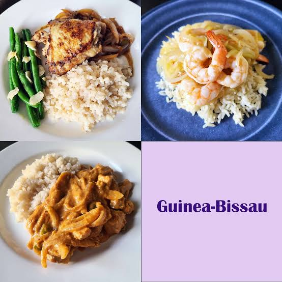

Massirem Da-Costa Djaló
Massirem Da-Costa Djaló, 25 anos, é uma jovem curiosa, determinada e apaixonada por aprender. Concluiu o 12.º ano em São José, onde desde cedo se destacou pelo empenho nos estudos e pela vontade de explorar áreas desafiadoras.
Inicialmente ingressou na área de Medicina, motivada pelo desejo de ajudar as pessoas e compreender o corpo humano. Ao longo do percurso, descobriu uma forte inclinação pela tecnologia e inovação. Essa transição lhe trouxe resiliência, disciplina e a capacidade de enfrentar mudanças com coragem e foco.
Atualmente é estudante de Engenharia Informática na Green Hard & Soft, onde combina lógica, criatividade e curiosidade para explorar soluções tecnológicas que possam fazer diferença na vida das pessoas. Fora do ambiente académico, aprecia novos desafios e está sempre aberta a aprender — seja em tecnologia, ciência ou experiências de vida.
Com uma visão voltada para o futuro, Massirem sonha em contribuir com projetos que unam tecnologia e impacto social, mostrando que determinação e paixão podem transformar trajetórias e abrir portas para novas oportunidades.

Contacto
E-mail: exemplo@exemplo.com
Local: São José